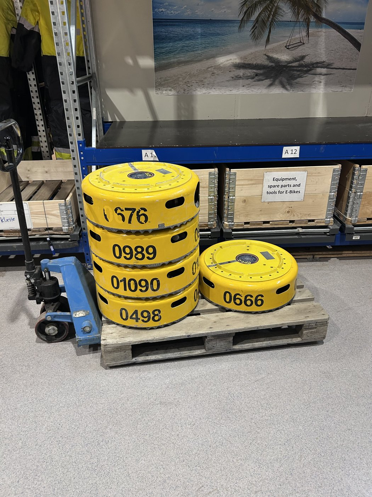

Introduction#
Welcome to Geo-OBS. This manual is a step-by-step guide to setting up, starting and stopping a Trilobit ocean bottom seismometer, and to downloading and processing its data from RAW into SEG-Y files.
The instructions are given in great detail and should be absolutely sufficient to operate a Trilobit. Please follow each and every step precisely.
What Is a Trilobit?#
A Trilobit is an ocean bottom seismometer (OBS): a self-contained recording station that is placed on the seafloor, records ground motion and pressure for weeks to months without any cable to the surface, and is recovered afterwards to read out the data.


Fig. 2 Five Trilobit ocean bottom seismometers, ready for transport.#
The instrument is the big yellow unit shown in Fig. 2. Under its yellow housing it contains:
two battery compartments (A and B), each holding one 10.5 V / 75 Ah alkaline battery,
one recorder module, the data unit that digitises and stores the data,
three geophones and one hydrophone as sensors,
three-axial tilt sensors, which record how the instrument lies on the seafloor.
There is no cable and no live connection while the instrument is on the seafloor. All communication happens before the deployment and after the recovery, through the R-Puck, a wireless interface that is placed on top of the Trilobit and talks to the EDR208 software on the laptop.
Usage Restrictions
The Trilobit units used at UNIS were given free of charge to the University of Bergen (UiB) by Seabed Geosolutions (now merged with PxGeo). According to this agreement, the Trilobits:
may be used for academic research only,
may only be deployed in Norwegian waters (including Svalbard),
must not be dismantled to use parts for other purposes. The hydrophone is subject to US export restrictions.
How the Signals Are Recorded#
The Trilobit records four seismic channels at the same time:
Three geophone channels (g1, g2, g3). A geophone measures the velocity of ground motion: a coil moves relative to a magnet, and the motion induces a voltage that is proportional to the velocity of the seafloor. The Trilobit uses three 14 Hz SM-6 geophones in a so-called Galperin configuration. The three sensors are perpendicular to each other, but instead of one vertical and two horizontal sensors, each one is tilted by 54.7° from the vertical and they are spaced evenly around it. This makes all three sensors identical and lets them work at any tilt of the instrument (“omni-tilt”). The price is that the recorded g1, g2 and g3 are not yet x, y and z: they have to be converted during processing, see X, Y, Z Conversion.
One hydrophone channel (h1). A hydrophone measures pressure variations in the water instead of motion of the ground. The Trilobit uses an HTI-96-MIN hydrophone, a piezoelectric sensor: pressure changes deform a ceramic element and produce a voltage. Because the hydrophone only senses pressure, it records the acoustic (P-wave) part of the wavefield and does not see shear waves.
Recording both kinds of sensors is what makes an OBS powerful. The combination of the three geophone components and the hydrophone allows you to separate the up-going and down-going parts of the wavefield, to distinguish P-waves from S-waves, and to check whether a signal came through the water or through the ground.
In addition to the seismic channels, the Trilobit logs auxiliary channels, among them temperature (aux0), battery voltage (aux1) and tilt (aux5). They are written into the same raw file and are useful for quality control, see Downloading the Raw Data.
The internal clock is synchronised to GPS time before the deployment, but drifts slightly while the instrument is on the seafloor (typically around 50 ms after 30 days). This is why the clock is read out and corrected during the recovery, before the data is downloaded, see Stopping the Trilobit and Correcting the Time.
Facts and Figures#
Key facts
Weight: 54 kg in air, 28 kg in water
Size: 590 mm diameter, 196 mm height
Max. operating depth: 3000 m (limited by the hydrophone)
Sensors: 3 × SM-6 14 Hz geophones in Galperin configuration + 1 × HTI-96-MIN hydrophone
Recording: 24-bit, sample interval 1, 2 or 4 ms (bandwidth up to 400, 200 or 100 Hz)
Storage: 2 × 64 GB flash, enough for 90 days at 2 ms
Power: 2 × 10.5 V / 75 Ah alkaline batteries
Battery life: 40 to 90 days, depending on battery choice (alkaline or lithium)
All numbers are taken from the manufacturer’s spec sheet: Trilobit specifications (PDF).
What Can You Measure with a Trilobit?#
An OBS record is simply a long, continuous recording of everything that moves the seafloor or the water above it. A few simple examples:
Earthquakes. Local, regional and distant earthquakes are recorded on the geophone channels. From the arrival times at several stations you can locate an event.
Gas seeps and bubble release. Rising gas bubbles produce a characteristic acoustic signal in the water column, which the hydrophone picks up.
Ice. Calving glacier fronts, drifting sea ice and cracking ice produce strong, repeated signals in Svalbard’s fjords.
Ocean and weather noise. Waves, swell and storms generate a continuous background noise whose level can itself be the signal of interest.
Ships and other man-made sources. Passing vessels are clearly visible on the hydrophone channel and often have to be removed before further analysis.
Active-source experiments. If an air gun or another controlled source is fired during the deployment, the Trilobit records the reflected and refracted waves, and the data can be used to image the structure below the seafloor.
Under construction
This introduction is still being extended. Pictures of the instrument and of example recordings will be added.